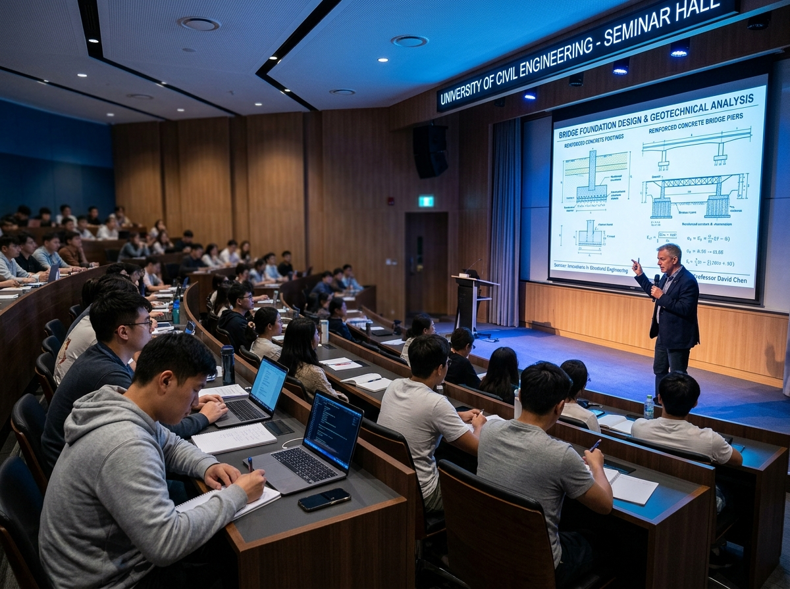

Seminar
5 Juli 2026
Open Talk Semester Genap Tahun Akademik 2026
Open Talk Semester merupakan program kerja yang diselenggarakan oleh Himpunan Mahasiswa Sipil Terapan (HMST), Fakultas Teknik, Universitas Jember sebagai wadah komunikasi dan diskusi antara mahasiswa dengan Program Studi Sipil Terapan. Kegiatan ini dilaksanakan secara rutin pada setiap awal pergantian semester sebagai bentuk komitmen himpunan dalam mendukung kelancaran proses akademik mahasiswa serta menjembatani penyampaian informasi yang relevan dengan perkuliahan.